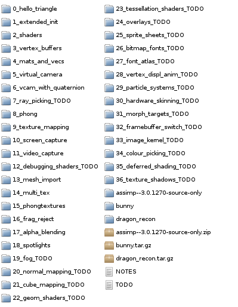

[index]
Anton's Research Ramblings
Binary Mesh Formats
I have a fairly stable custom mesh format. I've also been pulling apart overly
verbose or overly large (in bytes) formats. The next step is to have a look at
using a binary format. I've never tried this. fwrite() is just as
happy to write data values as it is to write the text version of those values.
I already have little header lines that say how big blocks should be - already
suitable for binary format. So I have the following questions:
- How much smaller will the files be when binary-encoded?
- Am I much more vulnerable to parsing errors?
- Are the files much quicker to parse?
- Will I reduce precision or accuracy errors if I encode the atual data of
float values, rather than a text representuation that is limited to
a certain number of digits?
- Can JavaScript parse these files as readily as C? i.e. Is it still worth
having a JSON version?
- Could I structure the file in such a way that the entire thing copies
directly into memory in one big block, without requiring any assembly after
parsing?
- Exporting from a model editor, do I still need a non-binary format, or can
these scripts also export sensible binary versions without a lot of trouble?
I saw a neat little example http://codeheartjs.com/examples/binarydata/.
I also recently saw something posted on Twitter about a chapter in the OpenGL
SuperBible [from memory] about a direct-to-memory map for doing this. I should
probably get a copy of this book.
OpenGL Tutorial Code
I've been busy actually following all my OpenGL tutorials to make sure that the
code works, and fixing any errors and typos. I'm putting together a package of
all of the demos. There's so many of them! I really should tie this series of
tutorials up soon. I've been making an e-book version but it's taking forever.
Hopefully there aren't too many ignorant mis-uses of the GL interface in my
tutorials. There certainly appears to be a small circle of elite people who
know an almost secret way of doing things, not using the main interface, but
using bizarrely-named functions and odd-looking extensions filled with
in-crowd-only jargon descriptions. Well, they're not very good at sharing this
information in an easily-digested form, so to hell with it, let's get the
simple stuff out there! We can worry about the expert-level stuff later.

Some Topics That I Should Write Blog Posts On
- My favourite set of tools for programming, debugging, profiling
- Some techniques that I use for writing multi-platform code
- A rant about why object-oriented programming is a waste of your time,
and how I got to be a really speedy programmer by un-learning most of my
education
- Some issues that I found with OpenGL on different platforms (Apple esp.)
- A post-mortem on making my 2d WebGL game. Why WebGL is awesome, and some
cautionary notes about JavaScript.
- Profiling the GPU time taken by GL functions, using queries, and something
about the awesome Apitrace programme.
- Some code conventions that I use, or "my latest spin on C++--"
- Some electronics stuff! Maybe turning an old CPU power supply into a
multi-voltage supply for projects?